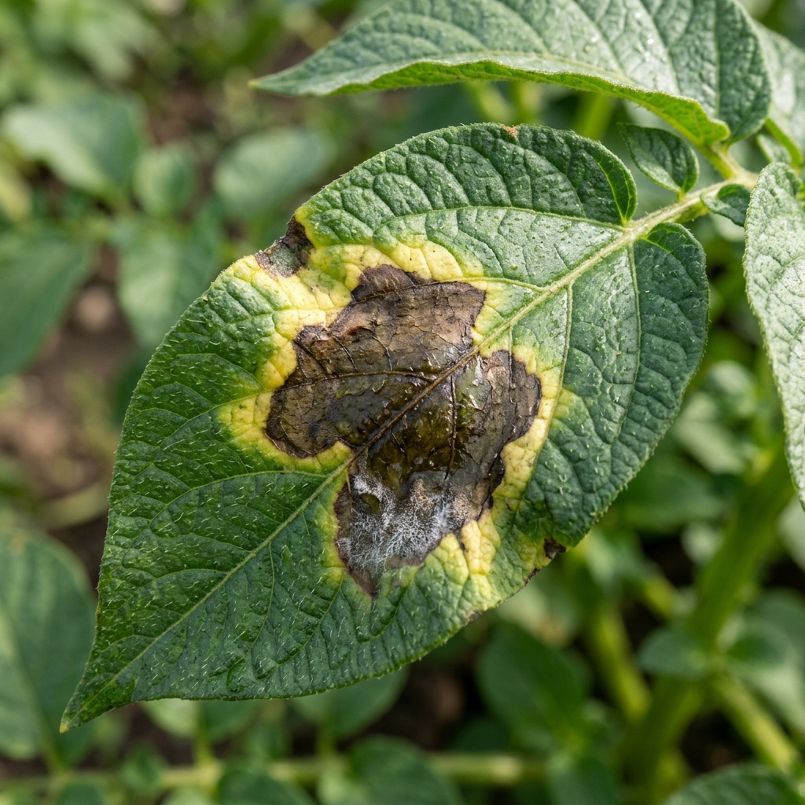
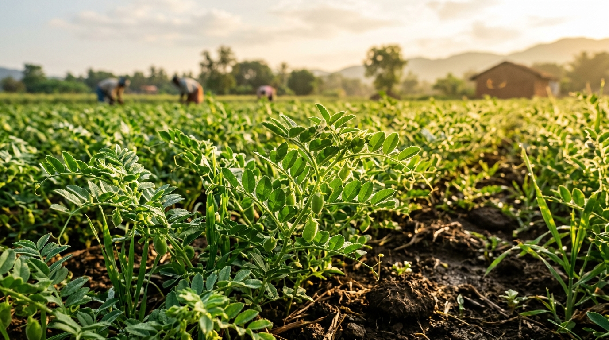
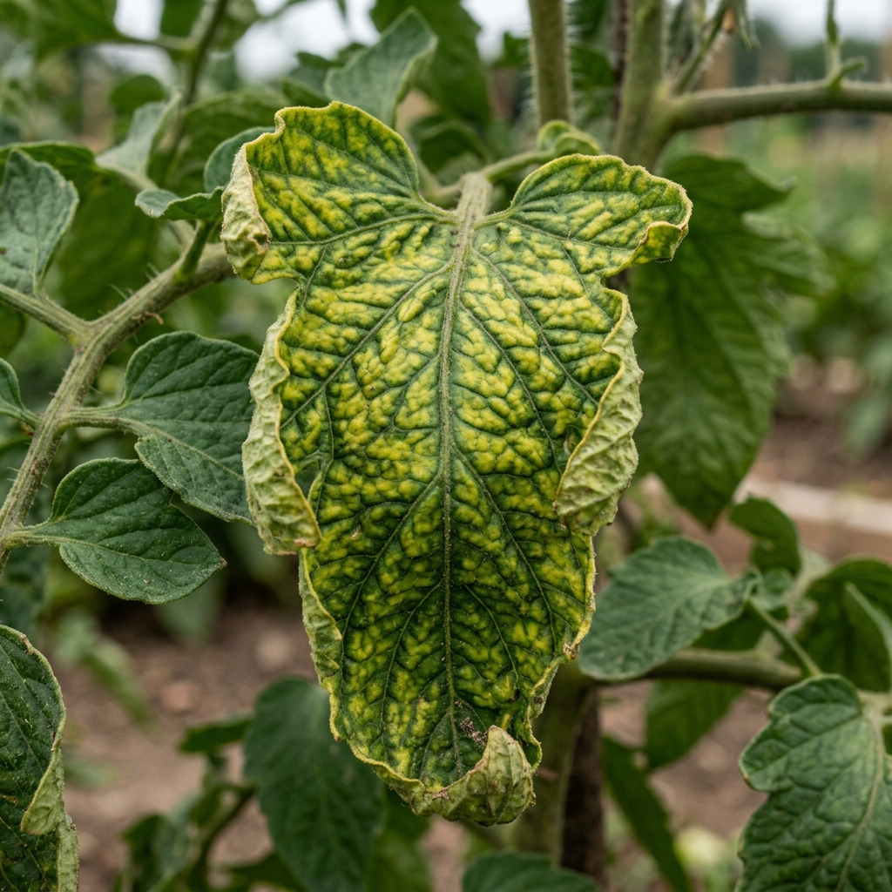
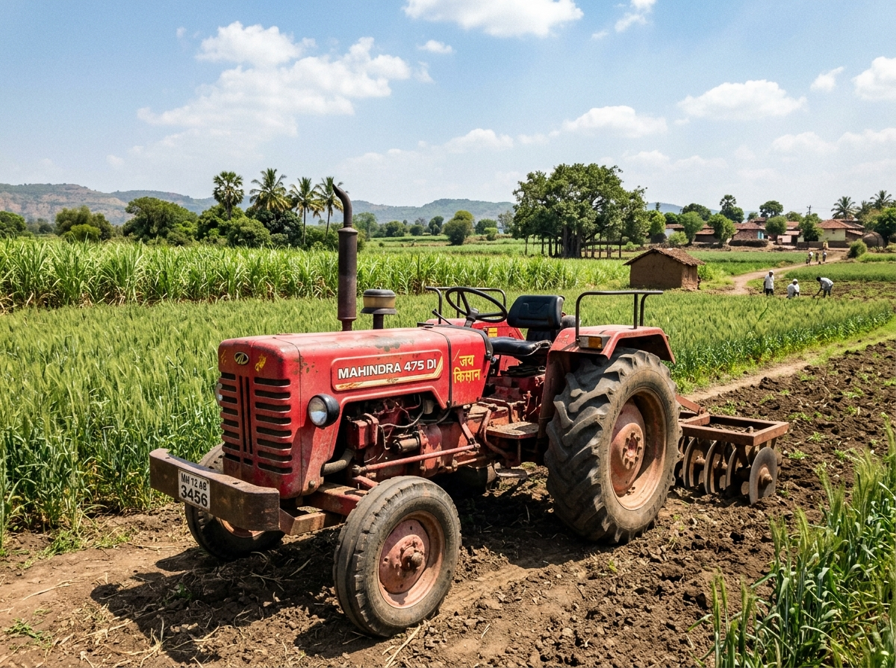

किसान सहायता सेवाएं
आपकी फसलें
सभी फसलें देखें →हालिया जांच
पूरा इतिहास देखें →उच्च नमी चेतावनी: झुलसा रोग (Blight Risk)
वातावरण में लगातार नमी रहने से आलू और टमाटर में झुलसा रोग (Blight) का जोखिम बढ़ जाता है। क्यारियों में जल निकासी साफ रखें।
आपकी फसलें
ट्रैक की जा रही फसलों का संपूर्ण रिकॉर्ड
Potato (आलू)
इस फसल के हालिया स्कैन
फसल स्वास्थ्य टाइमलाइन
समय के साथ फसल की स्थिति में बदलाव का रिकॉर्ड
हाल के स्कैन में संक्रमण के लक्षणों में क्रमिक कमी दर्ज हुई है।
जांच की तुलना करें
पहले की और हाल की जांच के बीच बदलाव देखें:
देखा गया बदलाव
Needs Attentionप्रोटोटाइप स्कैन रिकॉर्ड के अनुसार पूर्व जांच की तुलना में बीमारी के लक्षणों का प्रभाव बढ़ा हुआ दर्ज हुआ है।
आपकी फसल कौन-सी है?
जिस फसल की पत्ती जांचनी है, उसे चुनें:
पत्ती की फोटो लें
साफ फोटो से बेहतर जांच मिलती है
फोटो की गुणवत्ता
Client-Side Image Exposure & Blur Pre-check
पत्ती का विश्लेषण हो रहा है...
फोटो देख रहे हैं और धब्बों की पहचान कर रहे हैं...
पछेती झुलसा
हमने क्या देखा
अगला कदम
पहले क्या करें (खेत में तत्काल उपाय)
फिर जैविक / कम-जोखिम विकल्प
सावधानी एवं रासायनिक सलाह
संबंधित किसान सेवाएं (Related Farmer Services)
रासायनिक दवाओं के प्रयोग से पूर्व सुरक्षा मास्क और दस्ताने पहनें। सटीक क्षेत्रीय मात्रा हेतु नजदीकी कृषि विज्ञान केंद्र (KVK) से सलाह लें।
जांच परिणाम अनिश्चित है
AI पत्ती के रोग की पुष्टि पर्याप्त सटीकता से नहीं कर सका। कृपया बेहतर रोशनी में पत्ती की स्पष्ट फोटो लें या कृषि विशेषज्ञ से सलाह लें।
स्कैन इतिहास
स्थानीय रूप से सहेजे गए डायग्नोस्टिक रिकॉर्ड
मार्गदर्शिका एवं सहायता केंद्र
सटीक फोटो और सही रोग पहचान के सरल नियम
फोटो खींचने के सही व गलत नियम (Do's & Don'ts)

15–20 सेमी पास रखें। पत्ती का रोगग्रस्त धब्बा फ्रेम के 70% भाग में साफ दिखना चाहिए।

बहुत दूर से पूरे पौधे या खेत की फोटो न लें, इससे बारीक धब्बे नहीं दिखते।
दिन के सामान्य प्राकृतिक उजाले में फोटो लें। पत्ती पर एकसमान रोशनी रहे।
हाथ या फोन की गहरी परछाई न आने दें और न ही सीधी चिलचिलाती धूप का परावर्तन।

एक समय में केवल एक प्रभावित पत्ती पर फोकस करें। हाथ में स्थिर पकड़ें।

जमीन, ट्रैक्टर, जूते या एक साथ 10 पत्तों का गुच्छा फ्रेम में न रखें।
खेती साथी कैसे काम करता है?
अक्सर पूछे जाने वाले सवाल (FAQs)
क्या यह ऐप बिना इंटरनेट (ऑफलाइन) काम करता है?
अगर फोटो थोड़ी धुंधली हो तो क्या होगा?
दवाइयों की सटीक मात्रा के लिए क्या करें?
क्या मैं पुरानी जांचों में सुधार की तुलना कर सकता हूँ?
विशेषज्ञ कृषि वैज्ञानिकों से सीधे फोन पर मुफ्त सलाह प्राप्त करें:
1800-180-1551 (Call Kisan Helpline)रोग एवं उपचार कोश
वैज्ञानिक एवं पारंपरिक कृषि रोग समाधान
दवाई व खाद मूल्य तुलना
दुकानों पर ₹/100g व ₹/100ml सटीक दर
सत्यापित स्थानीय विक्रेता (Indore / MP)
किसान चौपाल (Community)
स्थानीय किसानों के वास्तविक अनुभव
कृषि वैज्ञानिक एवं विशेषज्ञ
सत्यापित कीट व पादप रोग वैज्ञानिकों से परामर्श
यदि आप निजी परामर्श शुल्क नहीं देना चाहते, तो भारत सरकार की मुफ्त किसान हेल्पलाइन पर कॉल करें:
📞 1800-180-1551 (टोल-फ्री 24x7)फसल अवशेष (पराली) सलाहकार
अवशेष जलाना रोकें — खाद, बायोचार व आय पाएं